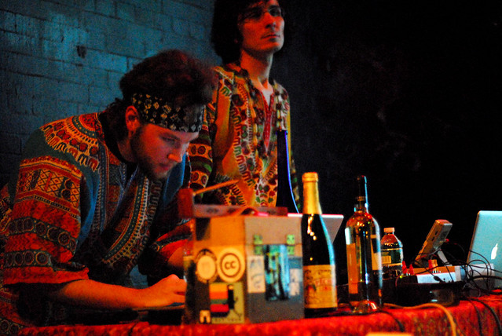
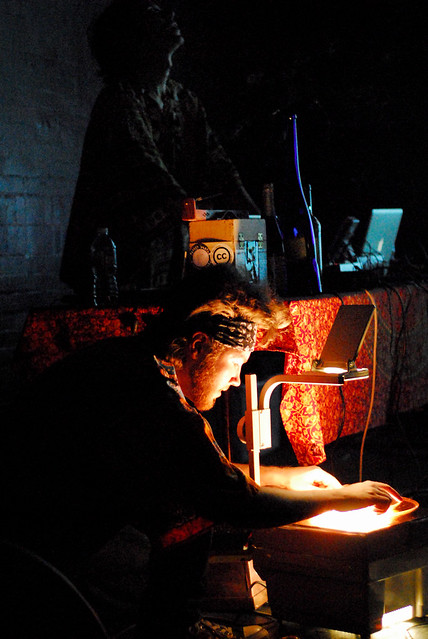
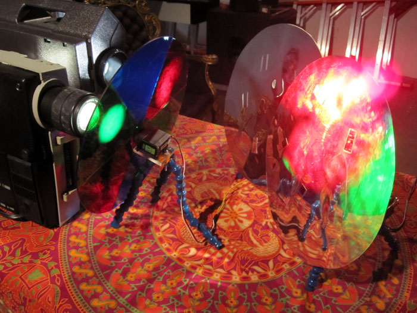
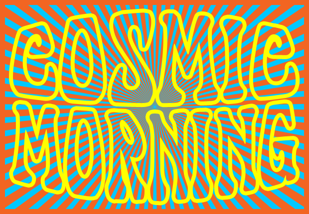

Cosmic Morning project
2010 - ongoing
Cosmic Morning was started in late 2010 by Alex Bond and myself. It started as a collaborative realtime light and video performance project, but has blossomed into much more.
Teaser for the Cosmic Morning show at The Tank, NYC
Alex and I were asked to perform at Pulsewave's 2010 Halloween party at The Tank in NYC. Pulsewave is a monthly showcase of chip music and low-bit video art. For the Halloween show each musician was covering a different band, as a sort of musical costume. Alex usually performs under the alias enso, and myself as NO CARRIER. Both inspired by psychedelic art and lightshows, we decided to "cover" a psychedelic liquid light show. We spent months preparing, gathering equipment and learning about the techniques used to create liquid light shows.

Cosmic Morning at The Tank, NYC
The NYC show was a success, as well as another show the same weekend in Philadelphia. Cosmic Morning was born as a mixed analog/digital lightshow, incorporating modern computers, obsolete video game consoles, and liquid lightshow techniques.

Cosmic Morning at The Tank, NYC
Since then I've moved the Cosmic Morning project in other directions. The study and creation of old and new analog lightshow techniques became my focus at ITP, an interactive media program at NYU. Cosmic Morning became my thesis, a mix of research, prototyping, and performance.
Aurora, one component of Cosmic Morning, was shown at Brooklyn's 319 Scholes gallery show titled Hello World in June 2011. Documentation of that show is available on the left under "Selected Work". I recently reunited with Alex to play another Cosmic Morning show at Pulsewave. This show was again an analog/digital mix, but incorporated Aurora into the mix as well.

Aurora at 319 Scholes, NYC
Cosmic Morning is inspiring to me for many reasons. After years of realtime video performance, it is enormously rewarding to go back and explore the roots of modern VJ culture, as well as incorporate some of those techniques into my work.
Cosmic Morning will continue to grow as a multifaceted project, with an focus on collaborative performance, research and invention, as well as documentation and the sharing of ideas - and of course good vibes.

The Cosmic Morning logo